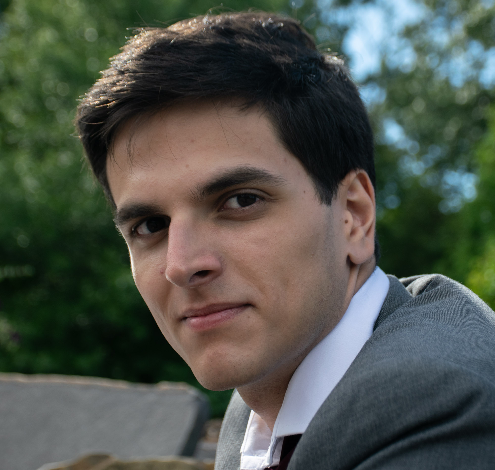

Timur A. Javid
|  |
I'm a BS-MCS student at the University of Illinois at Urbana-Champaign (UIUC). You can reach me at 
You can see my CV here. It was last updated on August 31, 2022.
|
Research Interests
I'm interested in quantum information research, more specifically quantum key distribution (QKD), communication protocols, and quantum algorithms.
Currently doing QKD research with the Kwiat Quantum Information group under Paul Kwiat in the Department of Physics @ UIUC.
Also working on augmented reality captioning research with the ScribeAR group under Lawrence Angrave in the Department of Computer Science @ UIUC.
Publications, Presentations, and Proceedings
- D. Gauthier, R. Cochran, A. Conrad, G. Golba, A. Gutha, S. Isaac, T. Javid, AJ Schroeder, D. Sanchez-Rosales, B. Wilens, and P. Kwiat. (2022) Technologies for drone-based quantum key distribution. Proceedings of the SPIE Defense + Commerical Sensing Conference, Orlando FL, May 2022.
- S. Isaac, A. Conrad, AJ Schroeder, T. Javid, D. Sanchez-Rosales, R. Cochran, A. Gutha, D. Gauthier, and P. Kwiat. (2022) Drone-Based Quantum Key Distribution. Proceedings of the Conference on Lasers and Electro-Optics (CLEO), San Jose CA, May 2022.
- A. Conrad, S. Isaac, R. Cochran, D. Sanchez-Rosales, T. Rezaei, H. Jones, AJ Schroeder, T. Javid,, K. Meier, D. Gauthier, and P. Kwiat. (2021) Drone-Based Quantum Key Distribution. Poster Presented at Chicago Quantum Summit, Chicago IL, November 2021.
- M. Jawad, T. Javid, C. Lualdi, and L. Angrave. (2021) ScribeAR: Design and Use of Augmented-Reality Captioning for Inclusive Education Access. Proceedings of the ASEE-IL-IN Conference, Urbana IL, May 2021.
Miscellanea
I like hiking and photography. Here are some of my photos.